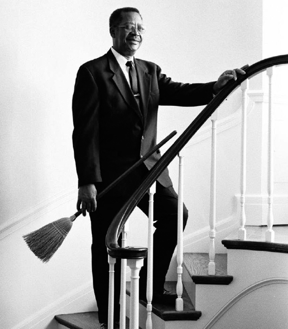

CARSON: Downton là một ngôi nhà tuyệt vời, ông Bates ạ, còn gia đình Crawley là một gia đình thật phi thường. Chúng ta sống theo một số chuẩn mực và những chuẩn mực này lúc đầu có vẻ khiến ta nản chí. BATES: Dĩ nhiên rồi. CARSON: Nếu ông thấy mình bối rối không biết nói gì trước mặt ngài ấy, tôi có thể đảm bảo với ông rằng cách cư xử và sự duyên dáng của ngài ấy sẽ nhanh chóng giúp ông thực hiện nhiệm vụ của mình một cách tốt nhất.
– DOWNTON ABBEY, TẬP 1, MÙA 1.
Đối với một quản lý Nhà Trắng thì “ngày chủ nhật và ngày lễ chỉ là trên danh nghĩa”, đó là nhận xét của Irwin “Ike” Hoover, từng là tổng quản lý từ năm 1913 cho đến khi ông qua đời năm 1933.
Các nhân viên trong dinh tận tụy với công việc của mình đến mức đôi khi họ không chịu về nhà dù được cho về. Bà Lady Bird Johnson bực bội với thói quen thức khuya của chồng đến mức một buổi sáng, bà gọi Tổng Quản lý J.B. West lên phòng trang điểm của mình bởi đêm hôm trước, các nhân viên phục vụ mãi đến nửa đêm mới được về nhà.
“Tôi rất buồn về việc các nhân viên phải ở lại quá khuya”, bà nói. Từ lâu tôi đã chịu thua chuyện không thể thuyết phục chồng tôi ăn tối sớm hơn. Chúng tôi có thể nào nhờ Zephyr [đầu bếp của gia đình Johnson] làm một món gì đó có thể giữ nóng lâu, hoặc tôi vào bếp hâm đồ ăn lại cho ông ấy, hay trong trường hợp tôi ngủ quên thì ông ấy có thể dễ dàng tự dọn ra ăn được không? Có thế, chúng tôi mới có thể cho các nhân viên phục vụ về nhà vào 8 giờ tối mỗi ngày”.
Khi West chuyển câu hỏi của đệ nhất phu nhân cho Tổ trưởng Tổ phục vụ Charles Ficklin, ông ta rất tức giận. Ông cho việc ở lại cho đến khi nào tổng thống còn cần đến họ là vinh dự của họ. “Tổng thống Hoa Kỳ mà phải tự dọn ăn tối lấy sao? Không bao giờ!”, Ficklin nói.
John, em trai của Charles, cũng đồng tình với anh. “Chúng tôi phục vụ từng bữa ăn cho các tổng thống và đệ nhất phu nhân theo đúng nghi thức từ rất lâu rồi. Cho dù đó chỉ là một cái sandwich kẹp phô mai, một bát ớt hay một quả trứng luộc. Đó là truyền thống”.
Khi West nói với bà Lady Bird rằng sẽ có một cuộc nổi loạn của toàn thể nhân viên phục vụ nếu họ bị cho về nhà sớm, bà trả lời rằng: “Tôi chưa bao giờ thấy cái nhà nào như cái nhà này. Đầu tiên, phải cần đến hai kỹ sư đốt lò sưởi vì họ không chịu để tôi tự làm. Còn bây giờ thì đến những người giúp việc không muốn về nhà buổi tối”.
Gary Walters, từng làm tổng quản lý từ thời Reagan đến thời George W. Bush, phụ trách việc tuyển dụng và sa thải nhân viên. Trong quá trình phỏng vấn, ông luôn cảnh báo họ rằng “đây chắc chắn không phải là công việc có thể ra về trong khoảng từ 5 giờ đến 9 giờ”. Bản thân ông cũng thấy nặng nề. Một trong những nguyên nhân khiến ông nghỉ hưu sớm là để có thể sắp xếp thời gian làm việc theo ý mình và cùng gia đình đi chơi xa.
“Tôi cho họ biết thời gian làm việc của họ là từ mấy giờ đến mấy giờ, nhưng tất cả bọn họ đều biết rằng vào những ngày mà tình hình thế giới buộc tổng thống làm việc nhiều hơn, thì bất cứ lúc nào họ cũng có thể được yêu cầu ở lại và làm việc hay đến thật sớm, hoặc đến chỗ làm vào phút chót và ở lại nhiều ngày liên tiếp, tùy thuộc vào lịch làm việc của tổng thống”.
Với Walters, cuộc sống gia đình của ông bị gián đoạn là chuyện xảy ra như cơm bữa. Năm 1991, ông chỉ vừa mới lái xe ra khỏi lối đi trong khuôn viên Nhà Trắng và đang hướng về sân bóng rổ của Đại học Maryland thì chợt nghe tin Mỹ và liên minh quốc tế bắt đầu oanh tạc lực lượng Iraq ở Kuwait. “Thế là tôi vừa lái xe ra khỏi cổng này, còn chưa kịp đi quá xa trên Đại lộ Pennsylvania thì đã phải vòng xe trở vào một cổng khác”.
Thợ sơn Cletus Clark, từng làm việc ở Nhà Trắng từ năm 1969 đến năm 2008, nói rằng ông đã hy sinh cuộc đời mình cho công việc trong suốt ngần ấy năm. Lúc nào ông cũng phải để máy bộ đàm ở chế độ bật, và thường xuyên bị gọi ra khỏi nhà để đi làm vào những ngày cuối tuần mỗi khi đệ nhất gia đình hứng lên muốn làm gì đó. “Nếu đệ nhất phu nhân muốn dời một bức tranh sang nơi khác và cần khoan một cái lỗ trên tường, họ sẽ ráo riết săn lùng tôi để đến làm việc đó”.
Bạn của Clark, Quản lý điều hành Tony Savoy, là người làm việc gần gũi với ông. Nếu đệ nhất phu nhân muốn thay đổi màu sơn của một thứ gì đó thì cả hai sẽ phải làm sao để cái nhiệm vụ lớn lao này trông như chẳng cần chút nỗ lực nào. “Chúng tôi phải mang hết đồ đạc ở tất cả các phòng ra. Nếu họ sơn phòng vào ngày thứ Sáu và thứ Bảy thì chúng tôi phải đến đó ngày chủ nhật để đưa đồ đạc về chỗ cũ”, Savoy nói. “Khi đệ nhất gia đình trở về nhà vào tối chủ nhật hay vào ngày thứ Hai, mọi thứ phải trông như họ chưa bao giờ đi khỏi nhà”.
Không ai muốn nói không với tổng thống hay đệ nhất phu nhân. Vả lại, đệ nhất phu nhân nào cũng thiếu kiên nhẫn. “Ai cũng sợ các đệ nhất phu nhân nên sẽ không nói thật với họ”, Clark nói. “Nếu bà ấy hỏi ‘Các anh có thể sơn toàn bộ Nhà Trắng trong một ngày không?’ thì họ sẽ trả lời là ‘Dạ được, thưa phu nhân’. Họ sẽ không nói không. Không ai muốn hủy hoại công việc của mình bằng cách nói thật”.
Clark nói ông chẳng bao giờ có thể làm điều gì một cách từ từ, dù đó là một công việc khó khăn như tìm ra đúng màu vàng đã sơn Phòng Bầu dục Vàng để làm mới căn phòng này. Không có bất kỳ sổ sách nào ghi lại những màu đã được sử dụng ở lần sơn trước cách đây nhiều năm. Vì văn phòng của Clark nằm dưới tầng hầm, thiếu ánh sáng tự nhiên, nên ông phải cầm các mẫu màu đi ra đi vào nhiều lần để xem chúng trông ra sao dưới ánh sáng tự nhiên. Sự tận tụy của ông đã không bị làm ngơ. Bà Laura Bush nói với ông là ông “được sinh ra để làm thợ sơn”, ông vênh mặt hãnh diện khi nhớ lại chuyện này.
Các sự kiện thế giới thường choán hết thời gian và tâm trí của tổng thống nên các nhân viên ở tư dinh phải xúm lại phụ giúp hết mình. Ông Jimmy Carter gần như lúc nào cũng lo âu kích động khi cả nước lâm vào tình trạng lạm phát ở mức hai con số, nhiều người phải xếp hàng dài mua xăng, và trước tình hình khủng hoảng năng lượng. (Rosalynn nói rằng chồng bà lúc nào cũng cho máy lạnh chạy hết cỡ – ông yêu cầu giữ nhiệt độ trong Nhà Trắng ở mức 65°F (khoảng 18°C) – đến mức các cô giúp việc phải mua quần áo lót dài cho bà vì thấy tội nghiệp bà).
Nhưng sự kiện làm Tổng thống Carter và những người hầu hạ ông thực sự kiệt sức chính là cuộc khủng hoảng con tin ở Iran. Trong suốt 444 ngày gian nan cực khổ, các nhân viên ở tư dinh phải thích nghi với lịch làm việc mới của tổng thống và thay đổi toàn bộ giờ giấc làm việc của họ do giờ của Mỹ và giờ Iran chênh nhau hơn tám tiếng. Khuya nào, các nhân viên nhà bếp cũng đều phải mang sandwich và bánh ngọt vào Phòng Bầu dục cho tổng thống và các nhân viên chính sách đối ngoại mệt lử của ông. Và vì sáng nào ông Carter cũng đến Phòng Bầu dục lúc 5 giờ, nên các gia nhân phải quét dọn và đem hoa tươi đến đó trước 4 giờ 45 phút sáng.
Bà Carter cho biết là các gia nhân đã rất chu đáo trong thời gian xảy ra khủng hoảng. “Họ rất lo cho chúng tôi”, Rosalynn nói với thái độ biết ơn. Các gia nhân cũng cho họ thời gian ở riêng với nhau, điều mà họ rất cần. Những lúc yên ổn, tổng thống và vợ lại ra ban công Truman nghỉ trưa. “Đó là quãng thời gian vui vẻ bình yên của chúng tôi”.
Ba mươi lăm năm sau, việc Carter bị bại dưới tay Ronald Reagan vẫn được xem như chuyện riêng tư, bà Carter hồi tưởng lại. Việc ở lại Nhà Trắng hơn hai tháng sau khi thất cử thực không thể chịu đựng nổi. “Ông ấy thất cử ngày 4 tháng 11 và chúng tôi phải chuẩn bị quay về nhà”. Nhân viên cắm hoa Ronn Payne nhớ lại sự đau khổ của gia đình tổng thống. “Họ khóc nức nở suốt hai tuần lễ liền. Ta không thể lên tầng hai mà không nghe tiếng họ khóc”.
LÀM VIỆC TRONG Nhà Trắng trở thành một lối sống. Quản lý kho Bill Hamilton về hưu sau 55 năm giúp việc cho Nhà Trắng. Không lâu sau ngày nghỉ việc, cuối cùng ông mới có thể đưa vợ ông, bà Theresa, đi London và Paris chơi để kỷ niệm 58 năm ngày cưới của họ. Họ có tất cả 7 con, 13 cháu và 4 chắt. Trước đây họ chưa từng đi châu Âu vì không có thời gian để đi.
“Vợ tôi là cô gái duy nhất tôi từng hẹn hò. chúng tôi quen nhau từ lớp năm”, ông nói đủ lớn để vợ ông ở phòng bên cạnh nghe thấy. “Khi tôi nói với mẹ tôi rằng đây là cô gái mà tôi sẽ lấy, mẹ tôi quay lại phát cho tôi một cái văng ra khỏi ghế... Bà ấy nói tôi còn nhỏ, biết gì mà nói”.
Hamilton được tuyển làm nhân viên quét dọn khi ông hai mươi tuổi. Như hầu hết các nhân viên khác ở Nhà Trắng, ông xin được việc này vì có người quen làm ở đây. Wilson Jerman, người bạn tốt mà ông quen khi còn làm ở Khách sạn Wardman Park tại Washington, là người đưa ông vào phỏng vấn. Đến bây giờ cả hai vẫn còn vài tuần một lần gọi điện cho nhau để đùa với nhau chuyện ai phục vụ Nhà Trắng lâu hơn.
Một nhân viên khác quá quen với những yêu cầu bất thường của công việc ở đây là ông thợ mộc Milton Frame, nay đã 72 tuổi. Ông Frame khởi đầu sự nghiệp tại Nhà Trắng năm 1961 bằng việc giúp đỡ Traphes Bryant chăm sóc đàn chó của gia đình Kennedy. Ba mươi sáu năm tiếp theo, mỗi ngày ông đều mất một tiếng rưỡi đồng hồ cho mỗi lượt đi hoặc về giữa nhà ông ở khu vực nông thôn Virginia với Phòng Mộc. Khi ông nghỉ làm tổ trưởng tổ mộc để về hưu năm 1997, ông sung sướng vì không còn phải thức dậy từ lúc 4 giờ sáng để đến chỗ làm lúc 6 giờ 30.
Cha của Milton là Wilford Frame cũng là thợ mộc ở Nhà Trắng. Mối quan hệ này giúp Milton thấy thoải mái với quy trình phỏng vấn hơn những ai không có thân nhân làm ở đây. Một buổi sáng chủ nhật, ông đến gặp Tổng Quản lý J. B. West.
“Anh có muốn làm việc ở Nhà Trắng không?” West hỏi.
“Tôi đang tìm việc, thưa ông”, Frame trả lời. Lúc đó ông đang làm thuê, ai sai gì làm nấy.
“Nếu tôi tuyển anh vào thì lúc nào anh bắt đầu được?”
“Bất cứ lúc nào ông muốn, thưa ông”.
Frame bắt đầu đi làm ngay ngày hôm sau, và ngay từ buổi đầu ông đã phải làm ngày làm đêm. Để đảm bảo nhân viên của mình có thể theo kịp tiến độ chiêu đãi khách liên tục của vợ chồng Kennedy, West huấn luyện họ bằng những công việc không thông báo trước. “Một buổi tối, chúng tôi trải qua một cuộc diễn tập”, Frame cười phá lên khi nhớ lại chuyện đó. “Chúng tôi phải mất cả đêm mới dựng xong cái sân khấu ở Phòng Đông nhưng vừa dựng xong thì ông West nói: ‘Dỡ nó xuống’”. West đứng cạnh họ canh đồng hồ xem mất thời gian bao nhiêu lâu để dựng một cái sân khấu. (Mất khoảng bốn tiếng đồng hồ để dựng lên và một tiếng rưỡi để dỡ xuống, Frame cho biết).
Ngày làm việc của nhiều nhân viên thậm chí còn dài hơn do mất thời gian đi lại trên đường. Hầu như ngày nào, khi trời còn chưa sáng, Quản lý điều hành Tony Savoy cũng được nhìn thấy đang ngồi trên xe của ông ở bãi đỗ xe để chờ cho đến khi Cơ quan Mật vụ cho vào lúc 5 giờ sáng. Ca trực của ông chỉ bắt đầu lúc 6 giờ 30, nhưng ông muốn đi sớm để tránh kẹt xe ở xa lộ vành đai. Ông thường làm thêm cả ngàn giờ mỗi năm, có khi cả tháng ông không nghỉ ngày nào. Ông về hưu năm 2013 và cho biết mình đang dự tính làm “bất cứ điều gì tôi cảm thấy muốn làm” – trong đó có cả việc “không làm gì cụ thể”, ông nói thêm.
KHI ĐƯỢC HỎI về những gì họ phải hy sinh vì công việc, ít ai đề cập đến chuyện tiền bạc. Các nhân viên ở tư dinh đều là công chức liên bang và lương của họ là “lương hành chính sự nghiệp” chứ không theo thang lương dịch vụ nhà nước. Lương của họ được trả theo kinh nghiệm và mức độ phức tạp của công việc. Một số nhân viên lãnh 30.000 đô một năm. Những người có mức lương cao nhất như tổng quản lý, quản bếp, quản bếp bánh ngọt, tổng quản lý bộ phận phòng và quản lý tổ phục vụ, có thể lãnh hơn 100.000 đô.
Quản bếp bánh ngọt Roland Mesnier đã từng từ chối nhiều công việc đem lại cho ông mức lương mấy trăm ngàn đô ở khách sạn Las Vegas và khách sạn Ritz ở Paris để làm việc cho Nhà Trắng. “Tôi đã có thể kiếm được gấp ba gấp bốn lần số tiền làm việc ở Nhà Trắng!”
Mesnier là người có chút tiếng tăm trong số các nhân viên Nhà Trắng. Ông bắt đầu làm việc cho Nhà Trắng năm 1979 và nghỉ làm năm 2006. Ông xem trọng công việc đến mức so sánh các món tráng miệng của mình với những tác phẩm nghệ thuật và đặt cho chúng những cái tên cầu kỳ hoa mỹ. Ai có thể cưỡng lại “Viên ngọc đen châu Úc”, một chiếc bánh hình vỏ sò bằng sô–cô–la trắng, bên trên là sô–cô–la rong biển cùng một con cá nhỏ bằng sô–cô–la mà ông chuẩn bị cho bữa quốc tiệc thết đãi các quan chức Úc? Hay “Khu vườn bonsai yên tĩnh”, món kem anh đào chua chua với mousse hạnh nhân, bánh hạnh nhân tí hon, rắc thêm ít kẹo nu–ga, đi kèm với đào và cherry tươi nhồi mứt quất, để vinh danh bữa tiệc dành cho Nhật Bản? Ông bỏ rất nhiều ngày để suy nghĩ cách kết hợp các thứ với nhau trong văn phòng mà ông sử dụng chung với quản bếp và phó bếp trên tầng ba. Thỉnh thoảng, do làm việc quá khuya, ông phải sử dụng căn phòng bên cạnh, nơi trang bị sẵn một chiếc giường và một chiếc sofa để dành cho những lúc cần ở lại qua đêm. Tình yêu công việc của Mesnier lây lan cho tất cả mọi người. Bảy năm sau ngày ông về hưu, ông nói với tôi rằng ông vẫn lo nghĩ cho gia đình tổng thống. Ngay cả bây giờ, mỗi khi nghe nói sắp tổ chức quốc tiệc là ông lại mơ thấy mình bắt đầu lên kế hoạch cho những món tráng miệng cầu kỳ.
Tuy nhiên, ngay cả những nhân viên nhiệt tình nhất cũng công nhận rằng họ phải trả giá cho cuộc sống ở Nhà Trắng. Mesnier thừa nhận rằng ông đã bỏ lỡ rất nhiều bữa tiệc sinh nhật và bữa ăn với gia đình. Ông thường lên kế hoạch cho bữa ăn tối cuối tuần cùng với vợ con nhưng rồi trên đường từ chỗ làm về nhà ngày thứ Sáu, ông lại phải gọi về để hủy kế hoạch chỉ vì gia đình tổng thống quyết định tổ chức một bữa tiệc sinh nhật hay một bữa tiệc cạnh hồ bơi vào ngày chủ nhật và ông biết mình cần có mặt ở đó. Cách mà ông giữ để mình không mất việc, ông nói, là phải luôn đặt Nhà Trắng lên hàng đầu. Ông cho biết những nhân viên nào không đặt công việc lên trên cuộc sống cá nhân của họ cuối cùng rồi cũng bị sa thải, vì gia đình tổng thống có quyền quyết định đuổi một nhân viên bất cứ lúc nào không cần giải thích.
“Gia đình tổng thống luôn biết mọi chuyện, tin tôi đi”, ông nói. Họ không cần ra phía sau nhà để kiểm tra mọi thứ, nhưng có người báo cho họ biết”. Nói cụ thể hơn thì các thư ký phụ trách sự kiện xã hội là liên lạc viên giữa các nhân viên và gia đình tổng thống.
Làm việc cho gia đình Clinton ảnh hưởng nặng nề nhất đến sức khỏe của người đầu bếp ưa thích sự hoàn hảo. Trong thời gian sống ở Nhà Trắng, họ tổ chức hai mươi chín đại tiệc cấp quốc gia, so với chỉ sáu bữa tiệc dưới thời Tổng thống George W. Bush, chỉ riêng tiệc mừng năm mới trong thiên niên kỷ mới, họ đã mời đến 1.500 người. Mesnier vì thế chỉ có thể ra về vào 7 giờ sáng hôm sau.
“Gia đình Clinton gần như giết tôi. Chân tôi đau nhức, rất đau nhức. Tôi không ngồi, không thể ngồi mà cứ phải liên tục đi đi lại lại. Suốt một ngày 16 tiếng đồng hồ, có lẽ tôi chỉ ngồi được có 20 phút. Ngay cả khi ăn tôi cũng phải đứng”.
Mesnier và vợ ông chọn ngày để ông nghỉ hưu sớm hơn bốn năm so với thời gian về hưu thực tế của ông.
Nhưng ngay cả khi đã nghỉ hưu, ông cũng không thể cắt đứt hoàn toàn với Nhà Trắng, và đã trở lại đó hai lần theo yêu cầu cá nhân của bà Laura Bush. “Tôi làm bánh sinh nhật [cho George W. Bush] rồi lại nghỉ tiếp. Nhưng sau đó hai tuần bà ấy lại gọi tôi trở lại lần nữa, và lần này tôi ở lại làm việc cho đến tháng 12 năm 2006. Tôi không nghĩ là chuyện này từng xảy ra với bất kỳ nhân viên nào khác”.
Các nhân viên chưa bao giờ phải chịu áp lực làm hài lòng gia đình tổng thống nhiều như dưới thời vợ chồng nhà Reagan. Bà Nancy Reagan thậm chí còn tự tay xếp thức ăn vào đĩa và khăng khăng muốn các gia nhân không được làm “những món ăn có màu sắc buồn tẻ” mà chỉ được chuẩn bị những bữa ăn nhiều màu sắc. Trước mỗi dạ tiệc cấp quốc gia, người quản bếp lại phải lấy ý kiến của đệ nhất phu nhân để lên kế hoạch cho từng món ăn. Rồi vài tuần trước khi tổ chức bữa tiệc, gia đình Reagan sẽ mời một nhóm bạn đến ăn thử và hỏi ý kiến của họ về từng món. Đệ nhất phu nhân sẽ nghiên cứu kỹ cái đĩa và chỉ cho người bếp trưởng cách bày thức ăn, đại loại như “‘Không, tôi nghĩ là phải để thịt bò nướng ở chỗ này’ hoặc là ‘tôi nghĩ nếu để đậu phía bên kia đĩa sẽ đẹp hơn’”, Quản lý Skip Allen hồi tưởng. Và nếu như bữa tiệc tối không đúng như ý bà muốn thì “hãy coi chừng đấy”, Allen nói. Ông kể rằng thỉnh thoảng bà lại gọi điện xuống Phòng Quản lý và yêu cầu được gặp người bếp trưởng trên tầng hai. “Nếu tình hình thực sự xấu, nếu món bà ấy trông chờ là măng tây nhưng lại được phục vụ đậu ve thì ta phải có lý do thật chính đáng để giải thích điều này”. Mesnier nhớ có lần ông đã phải làm hết món tráng miệng này đến món tráng miệng khác cho đến khi bà Nancy Reagan hài lòng.
Cho đến nay, ông vẫn còn bị ám ảnh bởi chuyện sau đây. Chỉ còn vài ngày nữa là đến thứ Ba, tức ngày tổ chức yến tiệc tôn vinh Nữ hoàng Beatrix và Hoàng thân Claus của Hà Lan. Lúc đó là tháng 4 năm 1982, bà Nancy Reagan đang ngồi ăn trưa với tổng thống ở chiếc bàn dài trong căn phòng Solarium mà bà yêu thích. Tổng thống ngồi ở đầu bàn bên kia, đối diện với bà. Sau khi bị phu nhân Reagan từ chối hai món tráng miệng, ông Roland quay lại với món thứ ba. Mỗi khi bà không vui, tất cả các gia nhân đều có thể nhận biết qua cách bà hơi nghiêng đầu sang bên phải và cười mỉm. Lúc này bà đang nghiêng đầu.
“Roland, tôi rất tiếc nhưng tôi không muốn ông làm lại món này nữa”.
“Vâng, thưa phu nhân”.
Từ phía đầu bàn bên kia, Tổng thống Reagan xen vào: “Em yêu, hãy để bếp trưởng yên. Món tráng miệng này rất đẹp. Ông làm món này đi, trông nó rất đẹp”.
“Ronnie, ăn súp của anh đi, đây không phải là việc của anh”, bà nói.
Ông cúi xuống cái chén của mình và im lặng ăn nốt chỗ súp.
Mesnier chịu hết nổi. “Tôi quay trở về bếp – tôi nhớ hôm đó là ngày Chủ nhật – tôi đi vòng vòng trong bếp và quả thực chỉ muốn tự tử cho xong”, Mesnier nói. “Tôi phải làm món gì đây? Tôi sẽ phải làm chuyện này bao nhiêu năm nữa? Tám năm sao? Tôi thực sự tuyệt vọng, hoàn toàn tuyệt vọng. Tôi đã nói là tôi không biết phải làm món gì, không biết phải làm gì. Và rồi chuông điện thoại reo lên. Bà ấy gọi tôi quay trở lên lầu gặp bà ấy”.
Bà ấy nói với Mesnier rằng cuối cùng bà đã quyết định xong món tráng miệng mà bà muốn ông làm. Đó là những chiếc giỏ bằng đường lộng lẫy, trong mỗi giỏ có ba bông hoa tulip bằng đường. Ông phải làm mười lăm giỏ hoa như thế cho bữa ăn tối, mỗi giỏ mất vài tiếng đồng hồ, đi kèm với hoa tulip, món tráng miệng trong mỗi giỏ và bánh quy ăn kèm.
“Đó là cái tôi muốn ông làm”, bà điềm tĩnh nói với ông, hài lòng với ý tưởng tuyệt vời của mình.
“Thưa phu nhân Reagan, món tráng miệng này rất hay, rất đẹp và tôi thực sự nghĩ rằng nó sẽ rất tuyệt, nhưng từ đây đến bữa tiệc tối chỉ còn có hai ngày”.
Bà mỉm cười và hơi nghiêng đầu sang phải: “Roland, ông có đến hai ngày và hai đêm trước khi đến bữa tiệc tối lận”.
Roland không còn sự lựa chọn nào khác. “Tôi chỉ còn biết nói ‘Cảm ơn phu nhân về ý tưởng tuyệt vời này’ rồi dập gót, xoay người và trở về với công việc”.
Ông bắt đầu làm việc cật lực ngày đêm. Sau bữa quốc yến, khi biết đệ nhất phu nhân hài lòng với kết quả, ông lái xe về nhà tối hôm đó trong tâm trạng hân hoan, ông đã vượt qua thử thách.
Bây giờ nhìn lại quá khứ, Mesnier đánh giá cao cách bà Nancy Reagan thúc ông làm việc mặc dù điều này đã khiến ông đau khổ biết bao vào thời điểm đó. Trên con đường dài về nhà tối hôm đó, ông nhớ lại, ‘Tôi nghĩ mình đã làm được điều đó. Đó là cách người ta đánh giá ta khi ta lâm vào thế kẹt. Họ sẽ xem ta làm thế nào để vượt qua khó khăn đó. Vì thế, ta phải làm hết sức mình”.
Ngày 8 tháng 10 năm 1987, vợ chồng Reagan tổ chức một yến tiệc mà mọi người đều trông chờ để thết đãi Mikhail Gorbachev và phu nhân Raisa. Đây là lần đầu tiên một lãnh tụ Xô–viết đến Washington kể từ khi ông Nikita Khrushchev đến Mỹ năm 1959. Một phần trách nhiệm nhằm giúp chuyến viếng thăm vô cùng quan trọng này thành công được đảm nhiệm bởi các nhân viên tư dinh.
“Bà Nancy Reagan cùng người thư ký phụ trách sự kiện xã hội của bà đến Phòng Hoa và nói với chúng tôi rằng bà muốn “làm bà Raisa lác mắt”, ông thợ cắm hoa Ronn Payne nói. “Và chúng tôi đã làm như bà ấy muốn. Chúng tôi thay từng cành hoa trong Nhà Trắng ba lần một ngày: buổi sáng lúc họ đến, vào giờ ăn trưa và trong bữa tiệc tối. Từng cành một, ba lần trong ngày, từng cành hoa”.
MỘT SỐ NHÂN viên cố hết sức vào vai một gia nhân tận tụy nhưng họ thường không trụ được lâu. Worthington White, một cựu cầu thủ cao một mét chín, nặng 182 ký của Đại học Virginia Tech từng làm quản lý ở Nhà Trắng từ năm 1980 đến năm 2012, cho biết sở dĩ ông trụ được lâu là vì ông biết lúc nào cần im lặng. Theo ông, việc các nhân viên cố gắng “cười ngặt nghẽo khi nghe những câu pha trò nhạt như nước ốc” hoặc tranh nhau “chường mặt mình ra trước mặt tổng thống và đệ nhất phu nhân” không bao giờ có tác dụng.
“Họ rất ghét điều đó”, White cho biết. “Tôi thường nói với các nhân viên mới vào làm là: điều tệ hại nhất mà các anh các chị có thể làm là cố gắng tỏ ra giả tạo. Họ là những chính trị gia tự tin nhất toàn cầu. Ta phải là chính mình. Họ thích ta hay không thích ta thì chưa biết, nhưng ta không gạt được họ”.
TUY CÔNG VIỆC phục vụ, làm phòng, cắm hoa và làm bếp có vẻ như là công việc quen thuộc của các gia nhân nhưng họ ý thức sâu sắc rằng mình cũng phải bảo vệ tổng thống và gia đình ông khỏi những mối đe dọa ngày càng nhiều hơn trên thế giới sau sự kiện 11 tháng 9. Theo những gì tờ Washington Post tường thuật thì một cô hầu phòng, chứ không phải một nhân viên mật vụ, là người đầu tiên phát hiện bằng chứng cho thấy có người bắn vào khu nhà ở của đệ nhất gia đình. Vào lúc 8 giờ 50 tối thứ Sáu ngày 11 tháng 11 năm 2011, một thanh niên 21 tuổi tên Oscar Ortega–Hernandez đậu chiếc xe Honda Accord đen đời 1998 của hắn trên Đại lộ Constitution, sau đó quay cửa kính phía bên hành khách xuống và dùng khẩu súng trường bán tự động bắn về hướng Nhà Trắng ở khoảng cách 640 mét xuyên qua Bãi cỏ phía nam. Có ít nhất bảy viên đạn trúng vào tầng hai và tầng ba của khu nhà ở của đệ nhất gia đình, làm vỡ kính cửa sổ bên ngoài Phòng Bầu dục Vàng, tức phòng khách trang trọng của gia đình tổng thống. Lúc xảy ra vụ nổ súng, tổng thống và phu nhân đang ở ngoài phố, cô con gái Malia của họ cũng ra ngoài chơi với bạn bè, nhưng Sasha, đứa con gái út của họ và bà Marian Robinson, mẹ của đệ nhất phu nhân, thì vẫn đang ở trong nhà. Một số nhân viên mật vụ nghe thấy tiếng súng nổ nhưng được lệnh rút lui. Những tiếng súng nổ này được kết luận sai lầm là do hai băng nhóm bắn nhau chứ không phải nhắm vào Nhà Trắng.
Bốn ngày sau, vào khoảng 12 giờ trưa thứ Ba ngày 15 tháng 11, một cô hầu phòng mời Phó quản lý Reginald Dickson đến gặp cô ở ban công Truman, nơi cô nhìn thấy tấm kính cửa sổ vỡ và miếng bê tông trắng trên sàn. Khi Dickson đến, ông phát hiện một lỗ đạn và một chỗ mẻ ở bậu cửa sổ nên vội vàng báo lại với Cơ quan Mật vụ. Không bao lâu sau, FBI bắt đầu mở cuộc điều tra. Họ tìm thấy một viên đạn trong khung cửa và những mảnh kim loại rơi ra từ bậu cửa sổ (các cửa sổ đều được gắn kính thường bên ngoài và kính chống đạn bên trong). Sáng hôm đó, tổng thống vẫn tiếp tục chuyến công du nhưng đệ nhất phu nhân quay về sớm hơn để ngủ một lúc. Lúc Dickson lên thăm hỏi bà, ông nghĩ bà đã được thông báo về vụ nã súng vào tòa nhà, nhưng bà không biết gì cả. Các trợ lý cấp cao của ông Obama trước đó đã quyết định sẽ thông báo câu chuyện đáng sợ này cho tổng thống trước và để tổng thống nói lại với vợ sau. Nhưng việc không thông báo với đệ nhất phu nhân hóa ra là một quyết định rất sai lầm.
Chẳng trách đệ nhất phu nhân đã nổi giận đùng đùng khi nghe tin này từ Dickson. Khi cựu giám đốc Cơ quan Mật vụ Mark Sullivan được triệu tập tới Nhà Trắng để thảo luận về vụ nổ súng, bà Michelle Obama giận dữ đến mức ai cũng nghe được giọng bà phía sau cánh cửa đóng kín. Nếu không nhờ cô hầu phòng tinh ý và người quản lý sốt sắng thì các viên đạn có thể sẽ được phát hiện trễ hơn hoặc không bao giờ được phát hiện.
Tổng Quản lý Stephen Rochon, đã nghỉ hưu vài tháng trước ngày xảy ra vụ nổ súng, là người đã tuyển Dickson vào vị trí này và nói Dickson đặc biệt thân thiết với đệ nhất gia đình. Vì thế Rochon không ngạc nhiên khi thấy Dickson và cô hầu phòng không rõ danh tính đóng vai trò quan trọng trong việc đưa vụ nổ súng ra ánh sáng. “Các viên được huấn luyện để luôn mở to mắt quan sát và báo lại với quản lý khi nhìn thấy điều gì bất thường, cho dù là kính cửa sổ vỡ hay một gói đồ để lại sau khi khách tham quan Nhà Trắng ra về. Các quản lý sau đó sẽ báo lên Cơ quan Mật vụ”. Ông nói thêm: “Chúng tôi không chỉ ở đó để lau dọn tòa nhà và phục vụ các bữa ăn”.
Trong một vụ vượt rào an ninh đáng sợ khác xảy ra ngày 19 tháng 9 năm 2014, một người đàn ông mang dao đã trèo qua hàng rào ở Bãi cỏ phía bắc và chạy qua mặt nhiều nhân viên mật vụ để xông thẳng vào Nhà Trắng. Khi vào đến bên trong, hắn ta khống chế một sĩ quan cảnh vệ và băng qua cầu thang dẫn lên tầng hai của khu nhà ở để vào Phòng Đông. (Phòng Quản lý được biết là đã yêu cầu tắt còi báo động gần lối vào chính của tòa nhà vì âm thanh tiếng còi quá lớn. Nếu còi báo động hoạt động bình thường, tất cả các sĩ quan cảnh vệ dưới mặt đất ắt đã được đánh động về vụ đột nhập). Kẻ đột nhập tên Omar Gonzalez cuối cùng đã bị một nhân viên mật vụ ngoài ca trực chặn lại ở gần cửa vào Phòng Lục.
Skip Allen, từng là một thành viên của đội cảnh vệ của Cơ quan Mật vụ suốt tám năm trước khi ông trở thành nhân viên quản lý năm 1979, đã kinh hoảng trước những vụ vượt rào an ninh này. “Tôi nhìn thấy một người nhảy rào lúc đang trong Phòng Quản lý”, ông nhớ lại. “Hắn ta chạy được đến giữa khuôn viên phía Bắc thì bị các sĩ quan mật vụ bao vây. Tôi chỉ không hiểu sao một người lại có thể chạy từ cổng trước đến tận Phòng Đông mà chẳng có ai làm gì được hắn”.
Nhiều vụ đe dọa đến tính mạng tổng thống cùng gia đình tuy không rõ ràng bằng nhưng không kém phần nguy hiểm. Quản Bếp Walter Scheib nói rằng mục đích của ông không chỉ là giữ cho đệ nhất gia đình mạnh khỏe mà còn là giữ mạng sống của họ. “Đây là không phải là chuyện nhỏ nếu xét đến số người ghét tổng thống vì bất cứ lý do nào, dù là trong nước hay ngoài nước”.
Ông Scheib, người từng làm việc cho gia đình Clinton và gia đình George W. Bush, nói rằng “không ai có thể đảm bảo an toàn sức khỏe cho tổng thống hơn bếp trưởng bánh ngọt và bếp trưởng”. Mesnier đồng tình. Ngay cả sau khi xảy ra sự kiện 11 tháng 9, trong bếp vẫn không có người nếm thử thức ăn. “Chúng tôi là người làm chuyện đó. Chúng tôi thực sự, thực sự tin rằng sẽ không có điều gì xảy ra”.
Tổng thống Lyndon Johnson vẫn hay lách các luật lệ quy định việc giao thức ăn cho Nhà Trắng, vốn ít chặt chẽ hơn trong thập niên 1960. Tổng thống rất thích món bánh blintz [**] do bà Margaret, phu nhân của Bộ trưởng Quốc phòng Robert McNamara làm nên thỉnh thoảng bà lại bảo chồng đem một ít bánh đến cho tổng thống bằng cách nhờ một ai đó trong Nhà Trắng đưa hộ. Có một lần, McNamara đưa số bánh blintz đó cho một sĩ quan cảnh sát và người này đã giao nó cho Cơ quan Mật vụ. Toàn bộ chỗ bánh liền bị hủy. Khi ông McNamara hỏi ông Johnson xem có thích món bánh blintz mà vợ ông ta vừa gởi không, tổng thống đã nổi trận lôi đình.
[**](Bánh kếp cuộn phô mai hoặc mứt trái cây.)
“Không được động tới đồ ăn của tôi!” Johnson hét lên với người nhân viên mật vụ xui xẻo xuất hiện trên đường đi của ông ngày hôm đó. “Hãy vận dụng cái thứ được xem là chứa não trên chóp đầu của anh đi. Anh nghĩ Bộ trưởng Quốc phòng sẽ giết tôi sao?”
Mesnier chỉ tận dụng cách đó một lần duy nhất. Trong bữa tiệc tối chiêu đãi ông Mikhail Gorbachev của gia đình Reagan, Mesnier đã đưa phúc bồn tử vào món tráng miệng cầu kỳ của ông vì ở Nga phúc bồn tử “đắt như vàng, chẳng khác gì trứng cá caviar”. Vài ngày sau khi vị nguyên thủ quốc gia Xô viết quay trở về nước, khi Mesnier đang đứng trong bếp với một đầu bếp khác thì không biết làm sao một cái hộp nâu lớn do ông Gorbachev gởi tới lọt được vào đây. Ông biết rằng bất cứ thứ gì đựng trong hộp này cũng đều phải được hủy ngay lập tức, nhưng trước hết ông vẫn cứ mở hộp ra xem đó là gì cái đã.
Nhìn vào bên trong, ông phấn khích khi thấy hai hũ thiếc lớn, mỗi hũ đựng khoảng ba ký trứng cá caviar Nga tuyệt hảo nhất. “Tôi không quan tâm anh làm gì với phần của anh”, ông nói với đồng nghiệp, “Nhưng tôi sẽ mang phần của tôi về nhà. Tôi sẵn sàng chết vì nó”.
Khoảng thời gian dài mà các nhân viên đã bỏ ra cùng lòng tận tụy đến khó tin của họ đã không bị đệ nhất gia đình ngó lơ. Tổng thống Ford biết ông gác cửa Frederick “Freddie” Mayfield thích bơi nên có một ngày, tổng thống nói ông mang đồ tắm đến Nhà Trắng và cả hai bơi với nhau. Một lúc sau họ vui cười hớn hở quay trở vào nhà trong chiếc áo choàng tắm.
Các đệ nhất phu nhân thường ngầm để các gia nhân họ thương yêu nhất hiểu rằng họ sẽ được giúp đỡ khi gặp khó khăn. Năm 1986, cô hầu phòng của bà Nancy Reagan là Anita Castelo bị kết tội giúp đỡ hai đồng hương ở Paraguay buôn lậu 350.000 viên đạn dành cho súng nòng 22 sang Paraguay. Đệ nhất phu nhân liền cấp một tờ giấy chứng nhận Castelo vô tội. Cáo buộc chống lại Castelo thế là bị hủy bỏ ngay khi vụ bê bối Iran–Contra, liên quan đến việc buôn lậu vũ khí trên quy mô lớn hơn rất nhiều, bắt đầu được đưa tin trên toàn quốc. Tổng thống bị cáo buộc đã phê chuẩn việc bán vũ khí cho Iran để đổi lấy việc phóng thích các con tin và tài trợ cho phiến quân Contra ở Nicaragua. Nhà Trắng hẳn đã trông cho vụ cáo buộc Castelo lắng xuống khi câu chuyện Iran–Contra sắp nổ ra. Bà Nancy Reagan muốn Castelo ở lại đến mức sẵn sàng bất chấp ý kiến dư luận để giữ cô lại với bà.
LÒNG TẬN TỤY hiếm có của các nhân viên đối với Tổng thống George H. W. Bush và gia đình ông dường như xuất phát từ cách cư xử gần gũi của đệ nhất gia đình đối với họ. Gia đình Bush luôn khiến mọi người xung quanh thấy thoải mái. Bà Barbara Bush nhớ lại một chuyện trong thời gian diễn ra chiến tranh Vùng vịnh, lúc bà đang lo lắng xem thời sự trên tivi. Trong lúc bà đang chờ chồng vào phòng thì Quản lý tổ phục vụ George Hannie đến hỏi bà: “Phu nhân muốn uống gì? Và bà nghĩ Pops muốn uống gì?” (Mặc dù một số người trong giới truyền thông chỉ mới bắt đầu gọi Tổng thống George H. Bush là “Poppy” Bush kể từ khi con của ông lên làm tổng thống nhưng ông đã có biệt danh “Pops” ngay từ khi còn trẻ. Trong thời gian ông sống trong Nhà Trắng, không ai ngoài gia đình ông gọi ông bằng biệt danh này).
Bà cười khi nhớ lại chuyện này. “Tôi nói với ông ấy là ‘George, anh không thể gọi tổng thống Hợp chủng quốc Hoa Kỳ như thế được”. Ông ấy biết tôi đang đùa, và tôi cũng biết ông ấy đang đùa. Chúng tôi thân nhau thế đấy.
Hannie lập tức đáp trả: “Tin tôi đi, phu nhân Bush, ở Nhà Trắng này, hết tổng thống này ra đến tổng thống khác vào. Chỉ có riêng George Hannie này là ở lại thôi”.
“Kiểu quan hệ của chúng tôi là như thế đó, có thể cười đùa với nhau. Nhưng khi có chuyện không hay xảy ra với bất cứ ai trong chúng tôi, chúng tôi đều giúp đỡ nhau”, bà Barbara Bush nói.
Nhân viên quét dọn Linsey Little cho biết Tổng thống Bush thứ nhất dễ gần hơn bất cứ vị tổng thống nào khác (kể cả con trai ông), “Ông Bush già khác hẳn những người khác. Còn ông Bush kia, miệng thì nói nhưng chân vẫn bước đi. Ông ta chẳng bao giờ trò chuyện, chẳng bao giờ làm gì. Trong khi ông Bush già lại rất dễ thương, cả ông ấy lẫn vợ ông ấy”.
Ra đời ở Robbinsville, North Carolina – một thị trấn chưa đến một ngàn dân – Little phải nghỉ học từ lớp bảy để phụ cha mẹ chăm sóc 6 em nhỏ. Cha ông là một nông dân lĩnh canh, nhưng Little bỏ công việc canh tác đậu phộng, bông và cây thuốc lá cực khổ để đi lên phía bắc và đến Washington vào đầu thập niên 1950.
Ông bắt đầu làm việc cho Nhà Trắng năm 1979 và thường phải rời nhà từ lúc 5 giờ sáng để có thể đến được chỗ làm lúc 6 giờ (Nhà ông nằm gần sân bóng đá FedEx Field đến mức ông có thể nghe thấy tiếng đám đông reo hò cổ vũ mỗi khi có trận đấu). Ông phải chuẩn bị sẵn sàng để Nhà Trắng mở cửa đón khách tham quan vào lúc 7 giờ 30 bằng cách giăng dây, lau sàn và trải thảm ra. Khi khách tham quan ra về, ông phải thu dọn mọi thứ để sáng hôm sau bắt đầu trở lại. Sau bữa ăn sáng vội vàng, ông thường được Quản lý bộ phận phòng Christine Limerick gọi báo cho ông và các đồng nghiệp của ông biết bao giờ đệ nhất gia đình thức dậy để họ có thể lên tầng hai hút bụi trong lúc các cô hầu phòng phủi bụi và làm giường.
Mối quan hệ giữa Little với Tổng thống Bush thứ nhất vượt xa công việc quét dọn quanh nhà. Little là một trong số rất ít gia nhân chơi ném móng ngựa (horseshoes) với tổng thống mỗi tháng vài lần và đôi lúc mỗi tuần hai ba lần.

LINSEY LITTLE
Tổng thống và cậu con trai Marvin của ông vui vẻ đến sân chơi horseshoes cạnh hồ bơi để chơi với Little và người quản lý ông sau khi họ làm việc ra. Ai cũng say mê trò chơi này đến mức Little còn đặt in dòng chữ HOUSEMEN’S PRIDE (Niềm tự hào của những người quét dọn) trên mấy cái áo thun của ông.
“Đến cuối trận đấu, chúng tôi lúc nào cũng thắng ông ấy”, Little cười lớn. “Nhưng năm ngoái khi chúng tôi chơi thì ông ấy và Marvin dành được chức vô địch”. Bà Barbara Bush nói hai vợ chồng họ rất buồn khi rời Nhà Trắng vì họ biết gia đình Clinton ít có khả năng tiếp tục truyền thống này.
Có một lần, tổng thống đã gọi Little đến gặp ông trong Phòng ăn Gia đình ở tầng hai. “Ông ấy mời tôi ngồi ở bàn và thế là chúng tôi ngồi nói chuyện với nhau”, Little lắc đầu.
“Ngồi cùng bàn nói chuyện với tổng thống! Không có một tổng thống nào khác làm thế”.
Ông Bush nhanh chóng tha thứ cho những nhầm lẫn mà nếu là các tổng thống khác hẳn sẽ nổi trận lôi đình. Vào một dịp cuối tuần mùa hè, ông ra ngoài chơi ném móng ngựa và nhờ một gia nhân xịt thuốc chống côn trùng cho ông. Người này đã phun thuốc khắp từ đầu đến chân ông trước khi nhận ra rằng mình lấy nhầm bình thuốc trừ sâu công nghiệp cực mạnh. Vài phút sau, khi sự nhầm lẫn được phát hiện, anh nhân viên này đã “chạy đúng nghĩa của chữ chạy” đến chỗ người bác sĩ luôn túc trực ở gần đó, Quản lý Worthington White nói.
“Lúc họ đến được chỗ bác sĩ thì mặt mũi của Tổng thống đã đỏ au”, White nói. Ông ấy phải “giải độc” dưới vòi nước.
“Vốn sẵn là một tổng thống rất tốt bụng từ trước đến nay, Tổng thống Bush nói: ‘Được rồi, được rồi, được rồi, chúng tôi chỉ muốn quay lại cuộc thi ném móng ngựa của chúng tôi thôi”. Không có ai bị sa thải vì chuyện này.
Gia đình Bush có vẻ như thực sự đánh giá cao sự hy sinh của các nhân viên, và để đáp lại các nhân viên cũng luôn cố gắng hết sức để làm hài lòng họ. Các nhân viên nhà bếp biết bà Barbara Bush ghét nghe mọi người hát bài “Happy Birthday to you”. “Trong thời gian vận động tranh cử, tôi đã nhận được bốn cái bánh sinh nhật trong một ngày từ những người chẳng hề có chút quan tâm nào đến tôi”, bà nói với tôi với thái độ thẳng thắn cố hữu của bà.
“Có một ngày, tôi về nhà ăn trưa và thấy món tráng miệng đặt trên đĩa – phải nói là Nhà Trắng cho chúng tôi ăn rất ngon. Đó là một chiếc bánh ga–tô vuông bé tí có các nốt nhạc của bài ‘Happy Birthday to you’ trên đó. Họ không nói chúc mừng sinh nhật, cũng không hát bài hát đó. Chỉ có những nốt nhạc”. Mesnier đã làm chiếc bánh này để bà có thể yên lặng thưởng thức nó trong lúc đọc sách trong bữa ăn trưa.
Hầu như sáng nào bà Barbara Bush cũng ghé xuống Phòng Hoa để chào mọi người, có lúc trên người chỉ khoác một chiếc áo bên ngoài đồ tắm trước khi ra ngoài bơi buổi sáng. Khi gặp ông Mesnier ở tiền sảnh, bà lấy chiếc bìa hồ sơ đập nhẹ vào người ông và trêu: “Ông làm gì ở đây thế? Sao chẳng có bánh trái gì vậy?”
Giám sát điều hành Tony Savoy nói bà Barbara đối xử với các nhân viên như một người bà. “Nếu ta đang ở trong thang máy, bà sẽ bước vào cùng thang máy với ta và nói rằng: ‘Ồ không, các cậu đừng ra khỏi thang máy. Tôi cũng lên lầu mà”.
Năm 1922, khi cơn bão Iniki tàn phá Hawaii, cô thợ cắm hoa Wendy Elsasser rất muốn đến gặp bố mẹ mình đang nghỉ hưu ở đó. Cô đã nhiều ngày không nghe tin gì của họ nhưng lại không muốn làm phiền vợ chồng ông Bush với mối bận tâm riêng của mình. Cuối cùng, vào một ngày Chủ nhật, trong lúc cô đang thay hoa trong khu nhà ở thì được bà Barbara Bush hỏi thăm cô có khỏe không.
“Tôi khỏe, thưa phu nhân Bush, cảm ơn bà”, cô trả lời, cố không lộ vẻ lo lắng trên mặt. Cô tiếp tục làm việc, nhưng chỉ vài phút sau, bà Barbara Bush lại ra đứng cạnh cô và hỏi: “Thực ra cô có chuyện gì? Cách cô nói không giống với một Wendy mà tôi biết”.
Mắt cô nhòa lệ. “Thưa phu nhân, bố mẹ tôi hiện đang kẹt trong trận bão đó, tôi lại không có tin tức gì của họ mấy ngày nay nên chỉ đang lo lắng thôi. Đầu óc tôi lúc nào cũng chỉ nghĩ về chuyện này”.
Bà Bush nói ngay không ngần ngại: “Wendy, nếu cô nghĩ tôi giúp gì được cô, tôi sẽ làm”. Đương nhiên là đệ nhất phu nhân chẳng giúp gì được nhưng Elsasser vẫn rất cảm động trước sự quan tâm của bà. Vài ngày sau, cuối cùng cô cũng được tin bố mẹ cô.
Quản lý Chris Emery nhớ mình đã “lặng người” sau khi nhận được một cuộc gọi bất ngờ từ gia đình Bush ngay ngày bố ông mất. Hôm đó là Lễ Tạ ơn và gia đình Bush đang nghỉ lễ ở Trại David. Chưa đầy 30 phút sau khi ông gọi báo cho sếp Gary Walters là bố ông mất, ông nhận được cuộc gọi từ nhân viên tổng đài điện thoại quân sự của Trại David nói rằng: “Chờ tôi chuyển máy cho Tổng thống”.
Tổng thống Bush “nói ông rất tiếc khi nghe tin bố tôi mất”, Emery nhớ lại, “và hỏi tôi xem ông ấy có thể làm gì”. Emery cảm ơn tổng thống và nói ông ấy không phải làm gì cả. Tổng thống ngưng một chút rồi nói tiếp: “Đợi đã, Chris. Bar (tức Barbara Bush) đang đứng ở đây, bà ấy cũng có vài lời muốn nói với anh”.
“Cô tưởng tượng nổi không?” Emery nói, giọng vẫn còn bàng hoàng.
Gia đình Bush đặc biệt quan tâm đến việc các nhân viên có thời gian ở cạnh gia đình. Khi Emery trực đêm, ông phải chờ đến khi tổng thống và phu nhân cho về mới được về. “Nếu là gia đình Reagan, hẳn họ đã nhấn hai tiếng chuông vào lúc 9 hoặc 10 giờ, có nghĩa là tôi phải lên lầu tắt hết đèn, sau đó gọi điện cho nhân viên hành chính trực tổng đài để báo cho họ biết là tôi sẽ về. Còn với gia đình Bush, phu nhân Bush thỉnh thoảng lại gọi điện cho tôi và nói: ‘Anh còn làm gì ở đây? Về nhà với gia đình đi!’. Lúc đó chỉ mới 8 giờ”.
Bà Barbara Bush và ông Emery hiện vẫn trao đổi email với nhau mỗi năm vài lần. Vị cựu đệ nhất phu nhân thường kết thúc lá thư với câu: “Thân ái, BPB”.